编辑命令与菜单评审板
w00025 t08：Markdown 编辑器的固定工具栏、选区浮动菜单、斜杠命令、块按钮与块菜单、正文右键菜单。草稿叠在 Lab 里真实的编辑器区上（真实的标签栏、面包屑与正文），工具栏与块按钮是一次性的草稿，不是产品代码；悬停、弹出这类交互不在静态稿里。
已定（2026-10-20）：只有固定工具栏常驻，放在标签栏与面包屑下方、与 720px 版心同宽居中，可在“视图”菜单里关掉，默认打开；其余菜单按需出现。块左侧照 Notion 放两个按钮：+ 与拖动手柄。所有编辑动作登记成工作台命令，插件可以往每种菜单里加菜单项。行内 AI 接口拆到 t12，批注界面在 t13。
第 1 轮图里粗体没有显示成粗体，是当时的一个缺陷，已在 t14 修好；第 2 轮的图是修好之后的。
第 1 轮已定：工具栏用完整的一套、平铺；点 + 在下方插入空块并打开斜杠菜单，点手柄打开块菜单。
菜单都用 nb-ui 整理后的共用件：块菜单与右键菜单是 ContextMenu，斜杠菜单是 SuggestionMenu。图里的“AI 改写”只是示意插件贡献的菜单项，本 Task 不做这一项。
点手柄的块菜单放什么 待定
基本（7 项）
转换为 ｜ 创建副本、复制 ｜ 上移、下移 ｜ 插件的菜单项 ｜ 删除
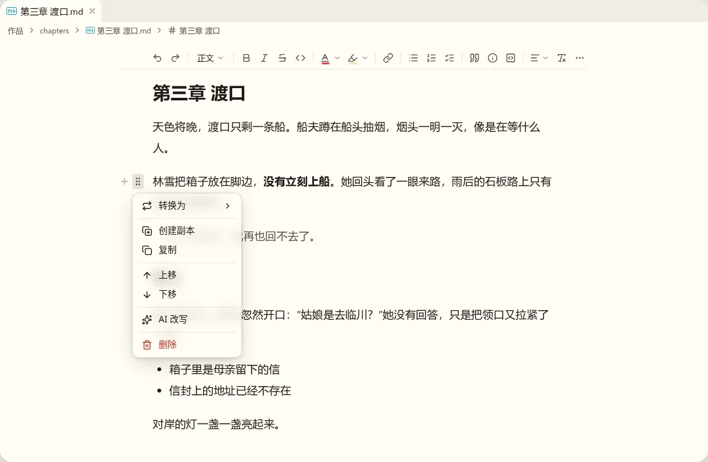
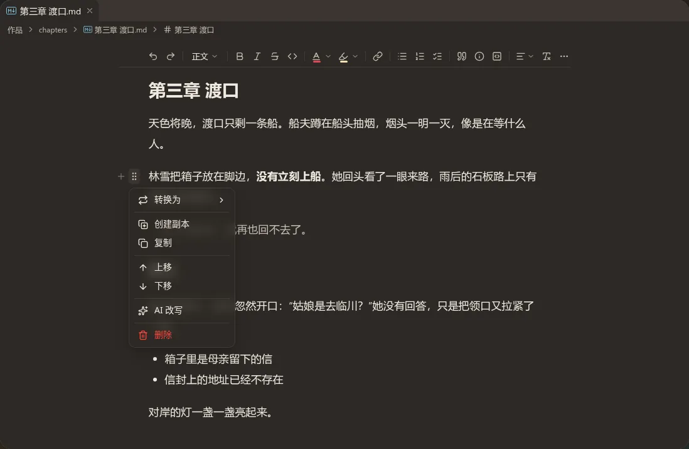
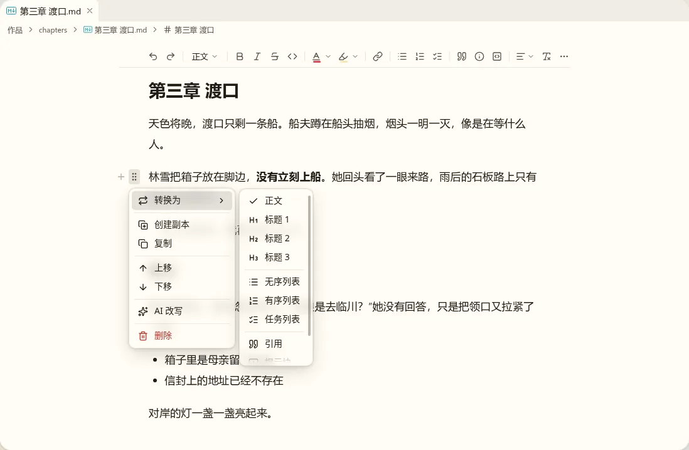
加对齐与颜色（10 项）
多出对齐、文字颜色、高亮，其余相同。超过 8 项，主菜单要滚动，“删除”滚到下面才看得见。
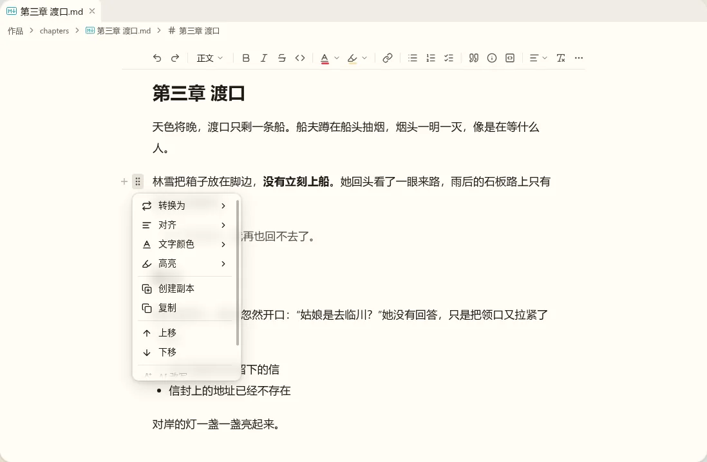
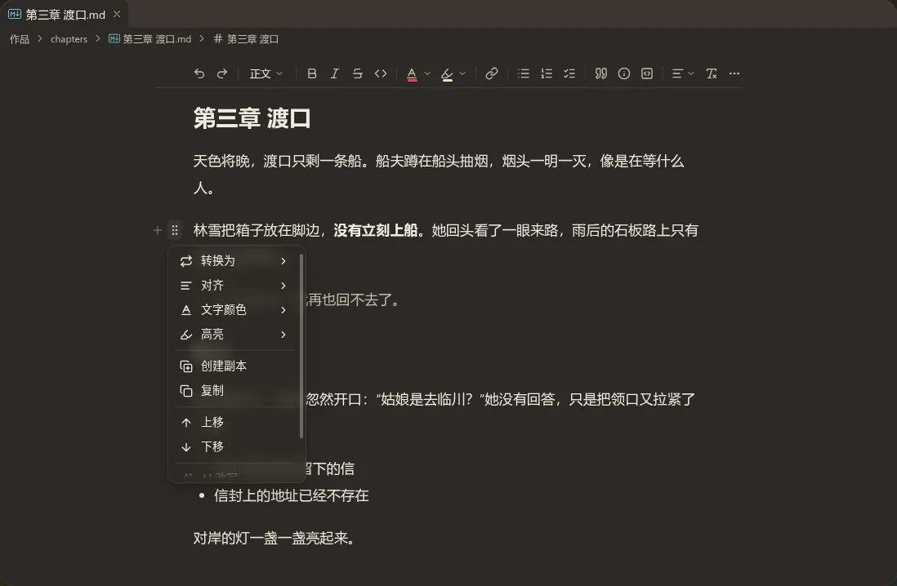
正文右键菜单放什么 待定
两个方案都会盖掉浏览器自带的右键菜单（拼写建议、翻译等）；菜单里的“粘贴”要读剪贴板，浏览器第一次会询问权限，Ctrl+V 不受影响。
基本（6 项）
剪切、复制、粘贴、粘贴为纯文本 ｜ 全选 ｜ 插件的菜单项。没有选区时，剪切和复制置灰。
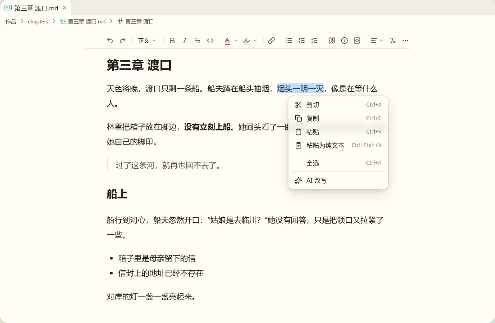
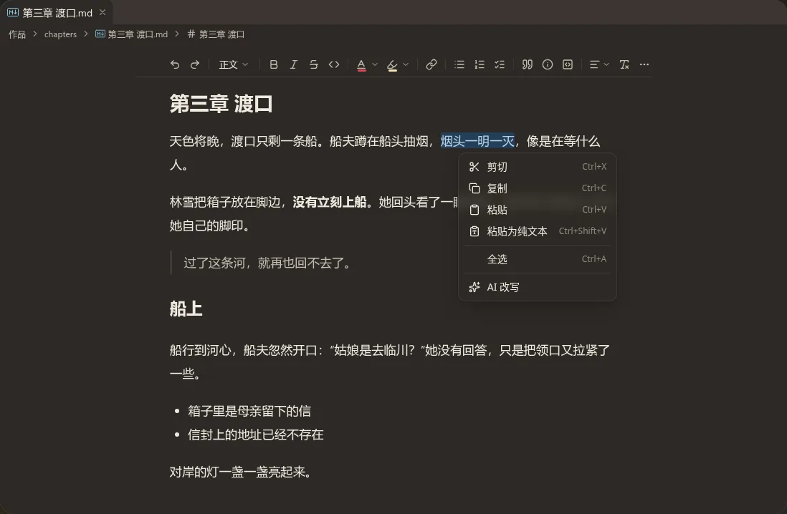
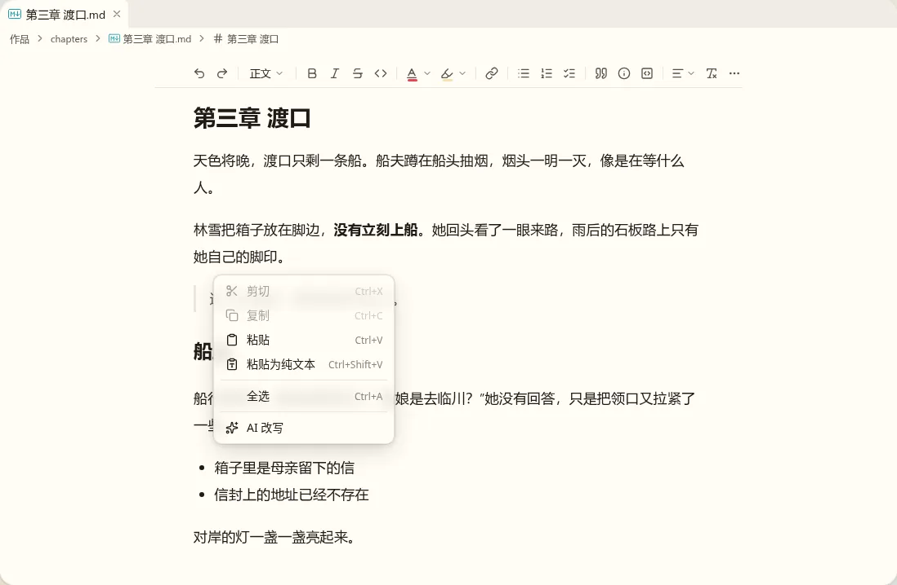
照旧应用（12 项）
保存 ｜ 撤销、重做 ｜ 剪切、复制、粘贴、粘贴为纯文本 ｜ 插入、注音、双语 ｜ 插件的菜单项。“加批注”归 t13，这里不放。超过 8 项，要滚动。
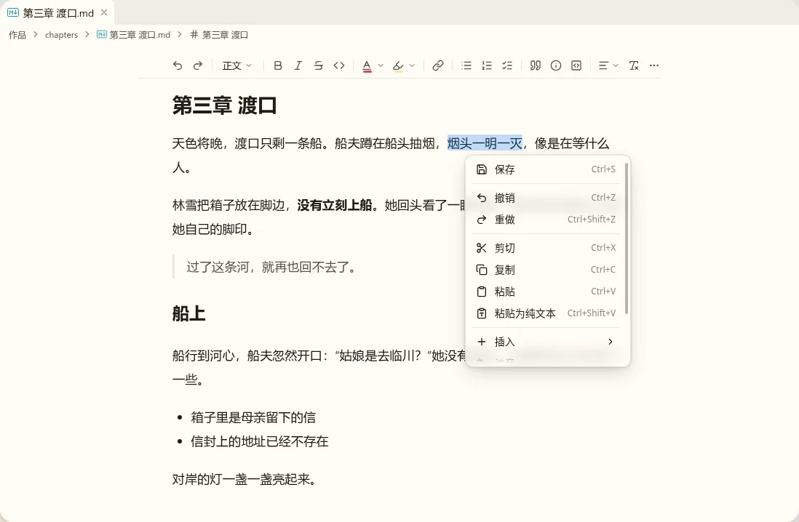
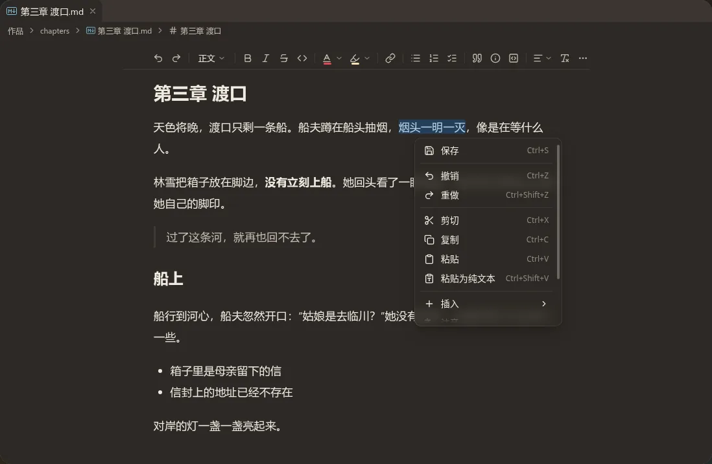
/ 和 + 里，撤销重做与保存有工具栏和快捷键。右键菜单只留别处没有入口的剪贴板动作，打开时一眼能看完。斜杠菜单右侧写不写 Markdown 写法 待定
面板换成了 nb-ui 的 SuggestionMenu：磨砂半透明的面、悬浮滑块，底部的按键提示和输入框里的占位提示都去掉了。第 2 轮的右侧灰字要按新定的“界面不靠说明文字解释自己”再判断一次。
不写
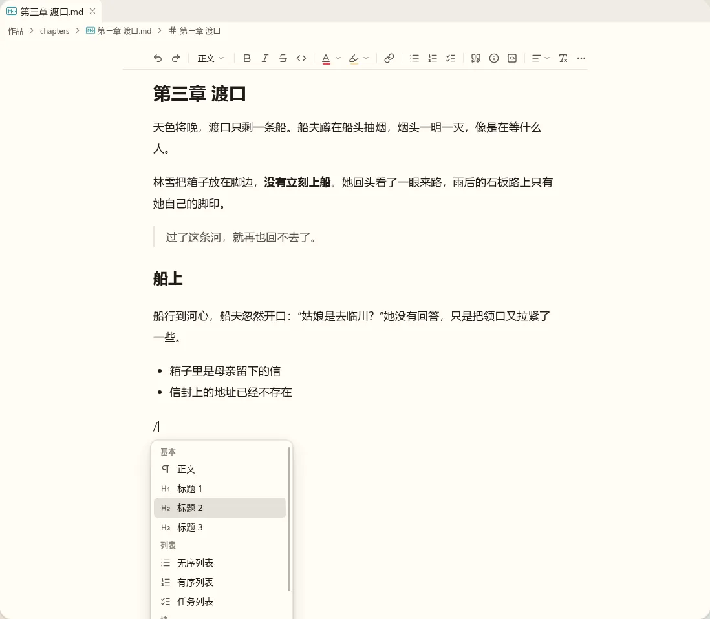
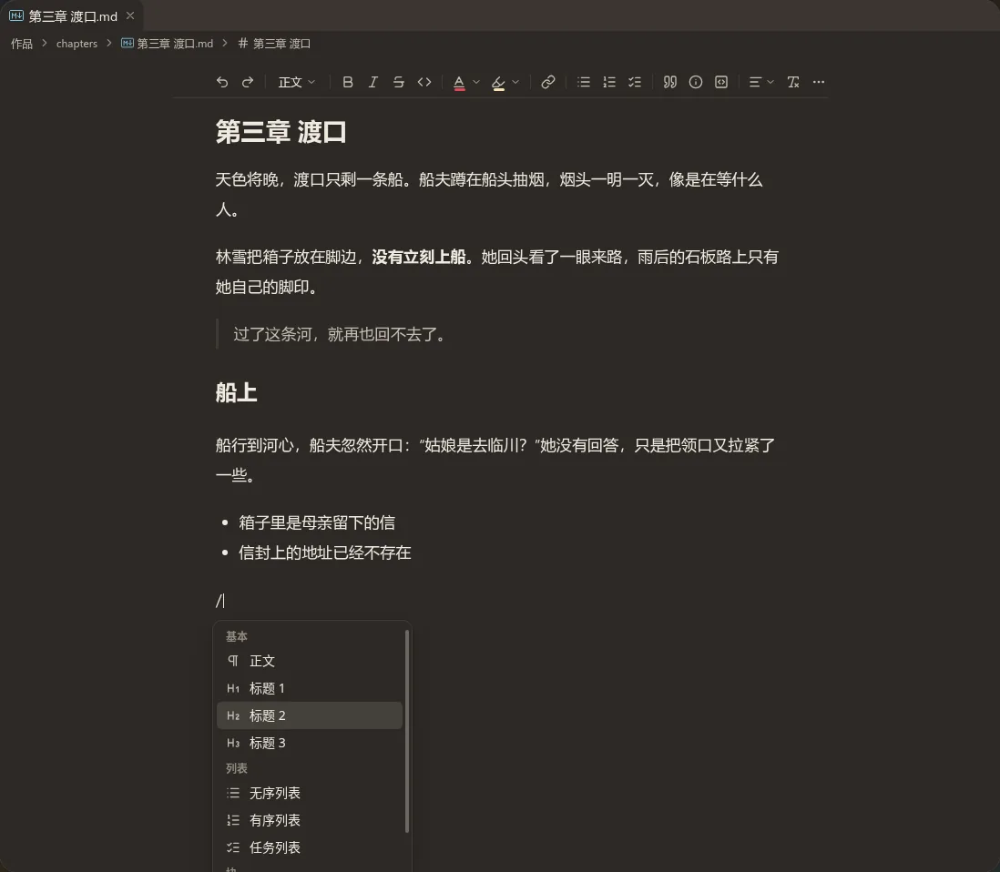
写
块左侧按钮离文字多远 已定
按第 1 轮的意见改：悬停底色的圆角改成 4px；按钮整体往左挪。第 1 轮手柄右缘离正文只有 5px，下面两档是 14px 与 20px。版心左侧留白是 48px，再远按钮就出了纸面；拆分后编辑区窄到没有页边时，按钮压进留白里，不会更远。
14px


20px


+ 贴着纸面边缘，和正文像是两样东西。选中文字时的浮动菜单放什么 已定
选中文字后在选区上方出现，松开鼠标或用键盘选完时出；选区折叠、打字或按 Esc 时收起。图里的选区是画出来的底色。最后的“AI 改写”只是示意：插件往这个菜单位置贡献的菜单项排在最后（决定 3），本 Task 不做这一项。
只放行内格式
粗体、斜体、删除线、行内代码 ｜ 链接、文字颜色、高亮 ｜ 注音、清除格式 ｜ 插件的菜单项


加块类型
最前面多一个块类型（正文 ▾），其余相同（Notion 的做法）。


/ 里都有。菜单短一些，挡住的正文也少。斜杠菜单这样做 已定
行首或空格之后打 / 出菜单（点 + 时也是它），接着打的字用来筛选，回车把这一块换成选中的类型（插入类的在光标处插入），Esc 或删掉 / 时收起。面板就是 Composer 里 / 菜单用的那个（PromptMenuPanel），两处一致；右侧灰字是对应的 Markdown 写法，看了能学会直接打。
| 分组 | 项 |
|---|---|
| 基本 | 正文、标题 1–3 |
| 列表 | 无序列表、有序列表、任务列表 |
| 块 | 引用、提示块、代码块、分割线、表格、双语对照 |
| 插入 | 引用文件、图片（选文件与存放位置的做法在 t09，这里只是入口；t09 之前先不放） |
筛选按名称，也按拼音首字母（例如 bt 找到“标题”）；拼音要加一个第三方拼音库，库的选型写进计划。插件可以往这个菜单里加项，排在各组之后。


工具栏放哪些按钮 已定
两套都在最右放“⋯”，没放上来的动作都在里面；版心变窄（例如拆分后）时，按钮从右往左收进“⋯”。按钮都是命令，以后可以让用户或插件调整。
完整（19 个）
撤销、重做 ｜ 块类型 ｜ 粗体、斜体、删除线、行内代码 ｜ 文字颜色、高亮 ｜ 链接 ｜ 无序、有序、任务列表 ｜ 引用、提示块、代码块 ｜ 对齐、清除格式 ｜ ⋯（上标、下标、分割线、注音、双语）


精简（9 个）
块类型 ｜ 粗体、斜体、删除线、文字颜色 ｜ 链接、无序列表、引用 ｜ ⋯（撤销、重做、行内代码、高亮、上下标、有序与任务列表、提示块、代码块、分割线、对齐、清除格式、注音、双语）


/ 和 + 里都还有，撤销重做有 Ctrl+Z。工具栏的样子 已定
平铺：没有底色，按钮从正文左边缘起排，下面一条分隔线，正文在它下面滚动。卡片：圆角卡片，有边框和浅阴影，像浮在纸面上。
平铺
卡片


块左侧的两个按钮这样画 已定
鼠标停在一块上时，左侧留白里出现 + 与拖动手柄（灰色，与正文第一行垂直居中）；停在哪个按钮上，那个按钮加一层底色。列表按每一项算，按钮在圆点左侧，与其它块同一列。点 + 做什么在会话里另问。

+ 上
第 3 轮定了就写实施计划。